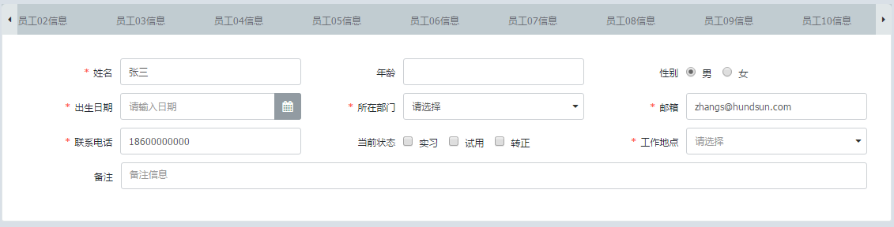

- Horn
- Horn._Pagebar-pagebar
- Horn.Base
- Horn.ButtonPanel
- Horn.Calendar
- Horn.CalendarGroup
- Horn.Checkbox
- Horn.CheckboxGroup
- Horn.Combox
- Horn.DataGrid
- Horn.Field
- Horn.FieldSet
- Horn.Form
- Horn.Grid
- Horn.HiddenField
- Horn.Label
- Horn.Menu
- Horn.MessageBox
- Horn.PageBar
- Horn.Panel
- Horn.Password
- Horn.PasswordGroup
- Horn.QueryTable
- Horn.RadioGroup
- Horn.Screen
- Horn.SelectTree
- Horn.TabPanel
- Horn.TargetSelect
- Horn.Textarea
- Horn.Textfield
- Horn.Tip
- Horn.TypeField
- Horn.Util
- Horn.Validate
- Horn.Window
- Horn.ZtreePanel
TabPanel 标签页面板组件
用于分组或分类信息的容器，将内容按照分组或分类方式放到不同的标签页区域中，当前可视的仅有一个，其他的页签内容可以通过点击对应的页签激活展示
依赖组件
- 无
适用范围
适用于分组或分类信息的容器，将内容按照分组或分类方式放到不同的标签页区域中，当前可视的仅有一个，其他的页签内容可以通过点击对应的页签激活展示
约束
- 无
注意事项
- 使用lazy时加载的是页面片段，需要注意dom的上下文
- tab中动态添加的标签页以及延迟加载的标签页的url只能是系统内部的视图请求
使用示例
示例1:
属性
注意：组件的id、name属性只能是英文字母开始，由英文字母、数字和下划线组成，命名时应考虑易识别，不要太长，不要和其他组件重复（表单内的组件除外）。
| 名称 | 类型 | 描述 | 默认值 |
|---|---|---|---|
| id | String |
组件的唯一标示 无 |
|
| name | String |
组件的名称(不能为空，不能重复) 无 |
|
| title | String |
页签的标题(可选项) 无 |
|
| lazy | String |
页签内容使用延迟加载lazy用于配置延迟加载的url #@tab_panel_content({"title":"延迟加载的标签","name":"tab1","lazy":"${appServer}/demo/tabpanel/lazy.htm"})
#end
|
|
| width | String |
页签标题宽度(可选项，宽度仅支持像素，如："width":"100"),如果设置了宽度，就获取其值，否则默认 #@screen()
#@tab_panel({"name":"tp","width":"150"})
#@tab_panel_content({"name":"content2","title":"页签2"})
#@panel({})
#textfield({"label":"文本框", "name":"key1","value":"","defValue":""})
#textfield({"label":"文本框", "name":"key1","value":"","defValue":"","readonly":"true"})
#label({"label":"label","name":"key5","value":"标签内容","defValue":""})
#textfield({"label":"文本框", "name":"key1","value":"","defValue":"","cols":"2"})
#end
#end
#end
#end
|
|
| maxTabCn | int |
最大页签个数(可选项，如："maxTabCn":5),如果设置了maxTabCn，就获取其值，默认值为30 #@screen()
#@panel({})
#textfield({"label":"请输入tab的名称:","name":"tabName"})
#textfield({"label":"请输入tab的标题:","name":"tabTitle"})
#end
#button_panel_ex({"buttons":[{"label":"新增tab页","name":"btnSetTitle","event":"addTab()"}]})
#@tab_panel({"name":"tp","maxTabCn":5}) ##优先获取API配置的maxTabCn的值
#end
#end
#jscode()
function addTab(){
Horn.getComp("tp").addTab({"name":tabName,"title":Horn.getComp("tabTitle").getValue(),"maxTabCn":5,"url":"$appServer.get('/test/textfield/status_change.htm')"});
}
#end
|
|
| position | String |
tabpanel页签展现方向调整,默认呈水平排列，提供纵向的左侧和右侧排列,属性值分别为：left、right(注！此属性不支持在window组件里使用) 无 |
top tab页签呈水平排列 |
| height | String |
提供高度支持。仅支持像素 无 |
|
| isFormValidate | boolean |
切换页签时是否自动校验 无 |
false |
方法
| 名称 | 参数 | 描述 |
|---|---|---|
| getCurrentTab | () |
获取当前激活的tab 参数: |
| getTab | (name) |
获取tab 参数: |
| addTab | (params) |
动态添加tab 参数:Horn.getComp("tp").addTab({"name":tabName,"title":tabTitle,"url":"$appServer.get('/test/textfield/status_change.htm')"})
|
| removeTab | (name) |
移除Tab 参数: |
| activate | (name) |
激活一个tab 参数: |
| enable | (name) |
启用对应的tab 参数: |
| disable | (name) |
禁用对应的tab 参数: |
Defined in: TabPanel.js